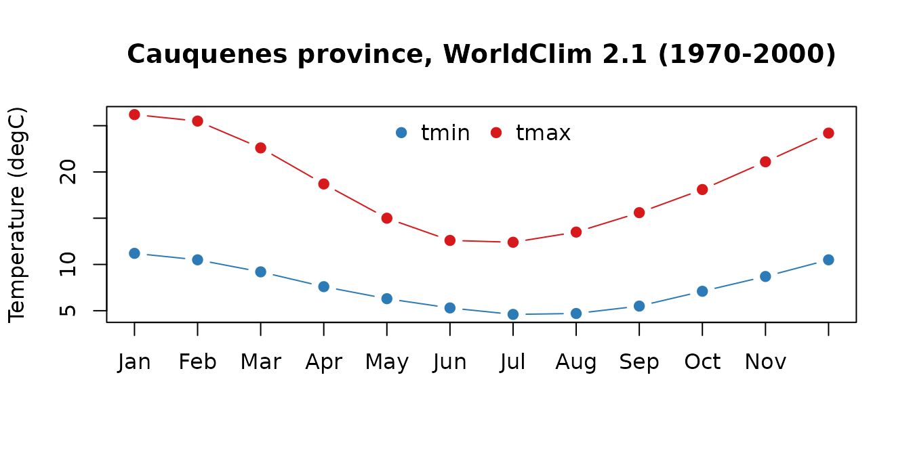
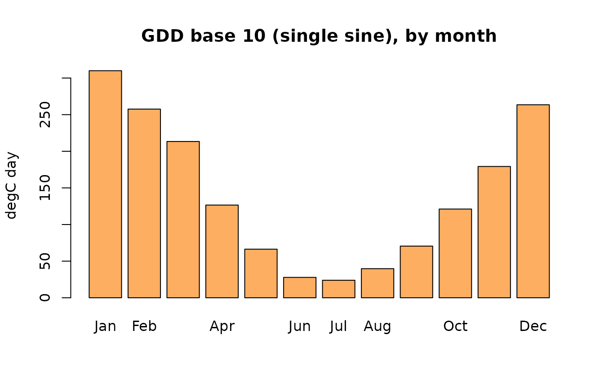
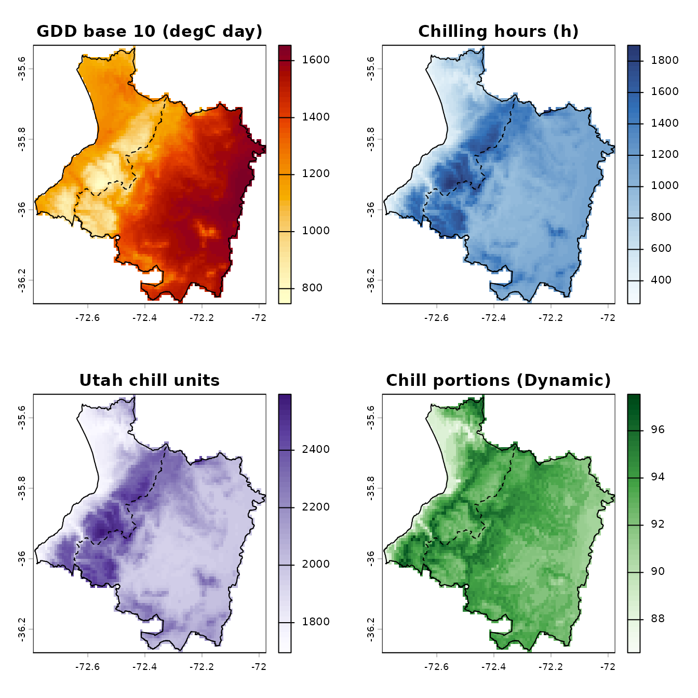
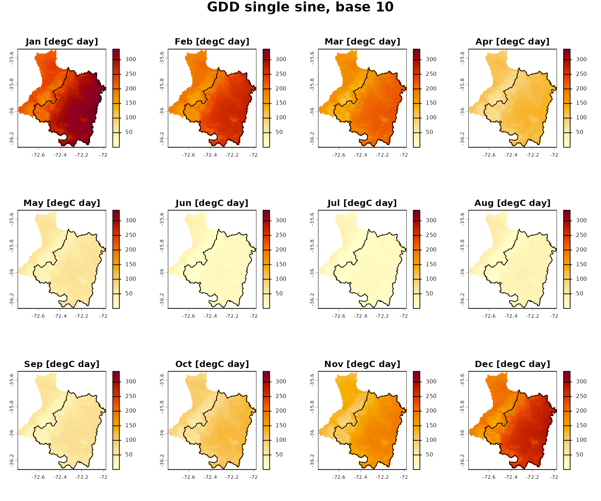
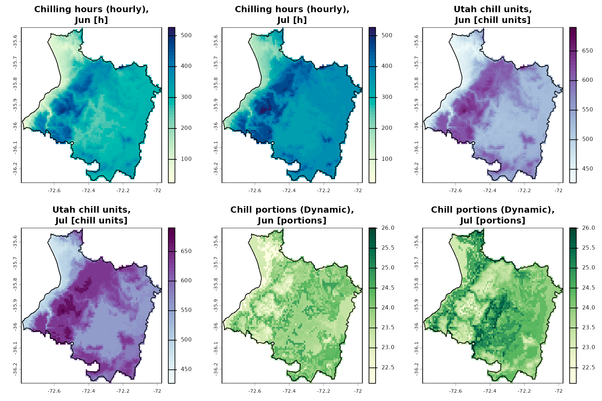
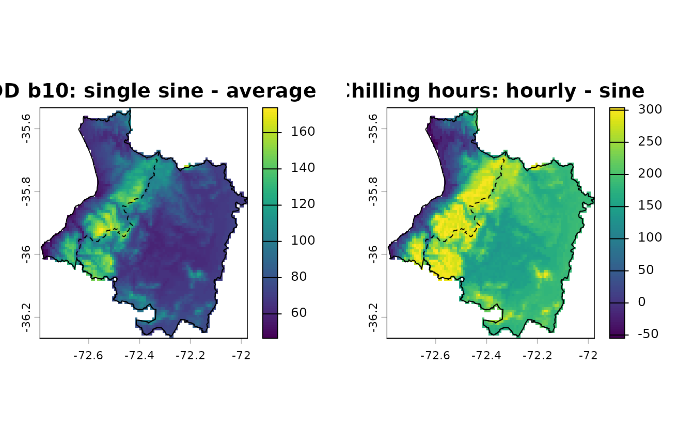

This tutorial computes heat and chill indices for the province of
Cauquenes (Maule Region, Chile) from the WorldClim 2.1 monthly
climatology (1970-2000) at 30 arc-seconds (about 0.9 x 0.75 km). The
province spans the Coastal Range from the coast to the central valley,
so the indices vary widely over short distances. The steps follow
examples/cauquenes/run.R, which uses a 20 x 20 km window
around the town instead.
1. Study area
thermify includes the official boundaries of the commune and province of Cauquenes from the 2023 Political and Administrative Division of Chile (DPA 2023, SUBDERE).
library(thermify) # also attaches terra
comuna <- cauquenes_boundary("comuna", crs = "EPSG:4326")
provincia <- cauquenes_boundary("provincia", crs = "EPSG:4326")
data.frame(level = c(comuna$nivel, provincia$nivel),
name = c(comuna$COMUNA, provincia$PROVINCIA),
area_km2 = c(comuna$SUPERFICIE, provincia$SUPERFICIE))
#> level name area_km2
#> 1 comuna Cauquenes 2124.54
#> 2 provincia Cauquenes 3021.672. WorldClim 2.1 for the province only
worldclim_region() reads only the part of the global 30”
tiles that covers the polygon (GDAL /vsicurl/ range
requests, under 1 MB here), caches it and masks the cells outside the
province:
tmin <- worldclim_region("tmin", provincia, path = "data", mask = TRUE)
tmax <- worldclim_region("tmax", provincia, path = "data", mask = TRUE)
tmin
#> class : SpatRaster
#> size : 88, 98, 12 (nrow, ncol, nlyr)
#> resolution : 0.008333333, 0.008333333 (x, y)
#> extent : -72.79167, -71.975, -36.26667, -35.53333 (xmin, xmax, ymin, ymax)
#> coord. ref. : lon/lat WGS 84 (EPSG:4326)
#> source : wc2.1_30s_tmin_region_51b8bba0.tif
#> names : m01, m02, m03, m04, m05, m06, ...
#> min values : 8.8, 8.1, 6.9, 5.3, 4, 2.7, ...
#> max values : 12.3, 11.5, 10, 8.9, 7.9, 7.2, ...
check_monthly_climate(tmin, tmax)
#> check value
#> 1 layers tmin / tmax 12 / 12
#> 2 layer names (month order) m01,m02,m03,m04,m05,m06,m07,m08,m09,m10,m11,m12
#> 3 CRS 4326
#> 4 resolution 0.00833333 x 0.00833333
#> 5 extent -72.79167, -71.975, -36.26667, -35.53333
#> 6 same geometry TRUE
#> 7 value range (degC) 2 to 29.5
#> 8 cells / valid cells 8624 / 4554
#> 9 identical NA mask TRUE
#> 10 tmin > tmax (cell-months) 0
#> ok
#> 1 TRUE
#> 2 TRUE
#> 3 TRUE
#> 4 TRUE
#> 5 TRUE
#> 6 TRUE
#> 7 TRUE
#> 8 TRUE
#> 9 TRUE
#> 10 TRUEThe province is covered by 4554 valid 30” cells. With
touches = TRUE (the default) every cell touching the
boundary is kept, so the cells add up to slightly more than the official
area; use touches = FALSE when cell areas matter. The mean
monthly climatology of the province:
clim <- data.frame(
month = month.abb,
tmin = round(unlist(global(tmin, "mean", na.rm = TRUE)), 1),
tmax = round(unlist(global(tmax, "mean", na.rm = TRUE)), 1),
row.names = NULL)
clim
#> month tmin tmax
#> 1 Jan 11.2 26.2
#> 2 Feb 10.5 25.5
#> 3 Mar 9.2 22.6
#> 4 Apr 7.6 18.7
#> 5 May 6.3 15.0
#> 6 Jun 5.3 12.6
#> 7 Jul 4.6 12.4
#> 8 Aug 4.7 13.5
#> 9 Sep 5.5 15.6
#> 10 Oct 7.1 18.1
#> 11 Nov 8.7 21.1
#> 12 Dec 10.5 24.2
matplot(1:12, clim[, c("tmin", "tmax")], type = "b", pch = 19, lty = 1,
col = c("#2c7bb6", "#d7191c"), xaxt = "n", xlab = "",
ylab = "Temperature (degC)",
main = "Cauquenes province, WorldClim 2.1 (1970-2000)")
axis(1, at = 1:12, labels = month.abb)
legend("top", c("tmin", "tmax"), col = c("#2c7bb6", "#d7191c"), pch = 19,
horiz = TRUE, bty = "n")
3. One location: the town of Cauquenes
thermify() densifies the 12 monthly values of a cell to
daily values with a mean-preserving interpolation
(pchip_mp), reconstructs hourly temperatures (Linvill
model) and accumulates the indices over the heat season (1 September -
30 April) and the chill season (1 May - 31 August).
The tutorial uses the native R engine
(temporal = "native"), which reproduces tempify to within
1e-13 degC. With reticulate installed,
temporal = "auto" uses the tempify Python
package instead; it is set up automatically the first time (see
install_tempify() and
vignette("tempify-integration")).
town <- vect(cbind(-72.3225, -35.9671), crs = "EPSG:4326")
tmin_town <- unlist(extract(tmin, town, ID = FALSE))
tmax_town <- unlist(extract(tmax, town, ID = FALSE))
res <- thermify(tmin_town, tmax_town, input = "monthly", latitude = -35.97,
temporal = "native", interpolation = "pchip_mp",
indices = c("gdd", "ch", "cu", "cp"),
gdd_methods = c("average", "single_sine", "double_sine"),
base = c(5, 10), ch_methods = c("sine", "hourly"))
season <- res$summary[res$summary$aggregation == "season",
c("key", "value", "units")]
season$value <- round(season$value, 1)
rownames(season) <- NULL
season
#> key value units
#> 1 gdd_average_b5 2690.4 degC day
#> 2 gdd_average_b10 1480.4 degC day
#> 3 gdd_single_sine_b5 2690.4 degC day
#> 4 gdd_single_sine_b10 1542.0 degC day
#> 5 gdd_double_sine_b5 2690.9 degC day
#> 6 gdd_double_sine_b10 1542.1 degC day
#> 7 ch_sine 827.3 h
#> 8 ch_hourly 970.0 h
#> 9 cu_utah 1944.5 chill units
#> 10 cp_dynamic 92.7 portionsGrowing degree-days (base 10 degC) by month:
gdd <- res$summary[res$summary$key == "gdd_single_sine_b10" &
res$summary$aggregation %in% sprintf("m%02d", 1:12), ]
barplot(gdd$value, names.arg = month.abb, col = "#fdae61",
ylab = "degC day", main = "GDD base 10 (single sine), by month")
Chill accumulation during the chill season:
d <- res$daily
chill <- d$month %in% 5:8
op <- par(mfrow = c(1, 3), mar = c(4, 4, 3, 1))
plot(d$date[chill], cumsum(d$ch_hourly[chill]), type = "l", lwd = 2,
xlab = "", ylab = "h", main = "Chilling hours (0-7.2 degC)")
plot(d$date[chill], cumsum(d$cu_utah[chill]), type = "l", lwd = 2,
xlab = "", ylab = "chill units", main = "Utah model")
plot(d$date[chill], cumsum(d$cp_dynamic[chill]), type = "l", lwd = 2,
xlab = "", ylab = "portions", main = "Dynamic model")
par(op)4. Indices for every cell
thermify_rast() applies the same workflow to every cell,
block by block, and writes one file per index with layers
season, annual and m01 to
m12. Latitude is taken from each cell. Printing the result
summarises the indices, their units and layers:
maps <- thermify_rast(
tmin, tmax, output_dir = file.path(tempdir(), "cauquenes-rasters"),
temporal = "native", interpolation = "pchip_mp",
indices = c("gdd", "ch", "cu", "cp"),
gdd_methods = c("average", "single_sine"), base = 10,
ch_methods = c("sine", "hourly"), progress = FALSE)
maps
#> <thermify_rast> 6 indices, 88 x 98 cells, 4554 valid
#> engine: native | interpolation: pchip_mp | reference year: 2023
#> gdd_average_b10 [degC day] season annual m01 m02 m03 m04 m05 m06 m07 m08 m09 m10 m11 m12
#> gdd_single_sine_b10 [degC day] season annual m01 m02 m03 m04 m05 m06 m07 m08 m09 m10 m11 m12
#> ch_sine [h] season annual m01 m02 m03 m04 m05 m06 m07 m08 m09 m10 m11 m12
#> ch_hourly [h] season annual m01 m02 m03 m04 m05 m06 m07 m08 m09 m10 m11 m12
#> cu_utah [chill units] season m01 m02 m03 m04 m05 m06 m07 m08 m09 m10 m11 m12
#> cp_dynamic [portions] season m01 m02 m03 m04 m05 m06 m07 m08 m09 m10 m11 m12
#> files in: /tmp/RtmpbZhuUK/cauquenes-rastersSpatial summary of the seasonal totals over the province:
stats <- do.call(rbind, lapply(names(maps), function(k) {
v <- values(maps[[k]]$season, mat = FALSE)
v <- v[!is.na(v)]
data.frame(index = k, cells = length(v),
mean = mean(v), min = min(v),
p05 = unname(quantile(v, 0.05)), median = stats::median(v),
p95 = unname(quantile(v, 0.95)), max = max(v))
}))
stats[, -(1:2)] <- round(stats[, -(1:2)], 1)
stats
#> index cells mean min p05 median p95 max
#> 1 gdd_average_b10 4554 1247.1 573.3 800.0 1280.9 1546.9 1583.4
#> 2 gdd_single_sine_b10 4554 1331.1 747.1 935.8 1360.1 1613.1 1653.9
#> 3 ch_sine 4554 942.9 305.5 553.3 934.8 1301.6 1624.2
#> 4 ch_hourly 4554 1117.1 254.0 558.0 1117.0 1599.0 1901.0
#> 5 cu_utah 4554 2087.3 1695.5 1789.0 2044.0 2414.5 2594.5
#> 6 cp_dynamic 4554 92.9 86.6 89.6 93.0 95.6 97.5plot() draws every index for the season, with titles,
units and one palette per family; boundary adds the
province outline:
plot(maps, boundary = provincia)
The annual cycle
type = "monthly" shows the twelve monthly layers of an
index on a common colour scale, here in a 3 x 4 grid with the commune
outline:
plot(maps, variable = "gdd_single_sine_b10", type = "monthly",
nrow = 3, ncol = 4, boundary = comuna)
and variable also accepts index families, for example
the chill indices in the coldest months:
plot(maps, variable = c("ch_hourly", "cu", "cp"), type = c("m06", "m07"),
nrow = 2, ncol = 3, boundary = provincia)
5. Method differences
Estimating degree-days from the daily mean ignores the hours above the base on days whose mean is below it. The difference with the single sine method is largest where the nights are cold:
d_gdd <- maps$gdd_single_sine_b10$season - maps$gdd_average_b10$season
d_ch <- maps$ch_hourly$season - maps$ch_sine$season
op <- par(mfrow = c(1, 2))
plot(d_gdd, main = "GDD b10: single sine - average")
lines(provincia); lines(comuna, lty = 2)
plot(d_ch, main = "Chilling hours: hourly - sine")
lines(provincia); lines(comuna, lty = 2)
par(op)
valid <- function(r) stats::na.omit(values(r, mat = FALSE))
round(rbind(gdd_sine_minus_average = summary(valid(d_gdd)),
ch_hourly_minus_sine = summary(valid(d_ch))), 1)
#> Min. 1st Qu. Median Mean 3rd Qu. Max.
#> gdd_sine_minus_average 46.5 67.8 74.2 84.0 94.2 173.8
#> ch_hourly_minus_sine -55.2 148.2 182.1 174.2 212.4 304.1Interpretation
- Values are climatological estimates for a reference 365-day calendar, not observations of any particular year.
- Two modelling layers (monthly to daily, daily to hourly) add uncertainty, especially to the non-linear chill indices.
- The tutorial checks computation and quantifies method differences;
it does not validate any method against observations (see
vignette("validation")).